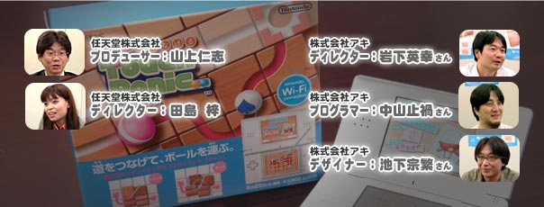
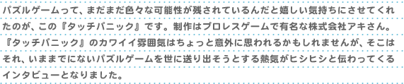
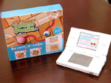
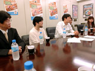
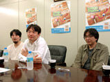
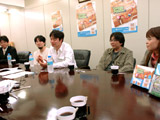
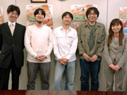

| |


| 岩下：はい。基本的なロジックとして考えていたのは、タッチペンで操作すると画面内の状況が多彩に変化していくことです。そこへプレイヤーを放り込んでパニックに陥れてしまおうと。つまり触れるとパニックになる＝『タッチパニック』というわけです。このタイトルとコンセプトは初期段階から固まっていましたね。同時に色鮮やかなボールをつなげることで、パズルでありながら派手に演出できないかとも考えていました。 |
|
パニックボールが知らないうちに変な場所へ行ってしまいます。 |
| 岩下：まさに狙いはそこでして、プレイヤーの意図しないところで何かがおきているシチュエーションを作りたかったんです。ボールではなく、ルートを作り出すパネルのほうを動かすというのはパズルゲームとしてプレイヤーに新鮮な感覚を提供できたんじゃないかと思います。 |
岩下：ニンテンドーDSより前のゲームの印象でいうと、パズルというジャンルは頭で考える、いわば硬いイメージがあったと思います。それと同様に操作方法もオーソドックスといいますか。今回はタッチペンで操作することになったので、従来とはひと味ちがう操作感をパズルゲームユーザーに感じてもらえないかなと。こういうのもあるんだと、気付いて欲しかったんです。
田島：最初の企画書で社長に直接プレゼンテーションできるレベルだったのを思い出します。こういうパターンってめったにないんです。企画書を見た感じではタッチペンの操作と思い描いているパズルの相性も良さそう。ただ、現状のままでは少し難度が高いかなという気もしていました。案の定、試作品を作ってもらって遊んでみると「超」がつくほど難しい。
山上：でもプレイを続けていると、なんか楽しい。これは調整を重ねていけばおもしろいパズルゲームになるという予感はありました。
岩下：試作品の感想を持ち帰ってからは、どうすれば遊びやすくなるか試行錯誤の繰り返しでした。製品版ではパネルの動きを、スライドとターンの2つにしていますが、当初はパネル自体が回転してルート変更するという案もありました。でも、それではゲームがスタートしてパネルが並んでいるときに、どうやって操作するかがプレイヤーへ直感的には伝わりにくい。パッと見てできるアプローチが、パネルを押す→回転というのは少しちがうかしれない。そこで、せっかくパネルが上下左右に並んでいるので、スライドさせるほうがスマートなんじゃないかと考えたわけです。 |
|
たしかに。回転だけだと操作スピードの勝負になってしまう。 |
| 岩下：ええ、そうです。スライドなら1ヶ所動かしただけで列全体が変わる、一番外側にあったパネルが列の反対側へと移動する。その意味では、一般的なパズルゲームのように決まった箇所を見ているだけではクリアできない、新しいプレイ感覚を楽しめるゲームへ仕上げることはできたかなと思います。ターンが加わったのは開発の後半で、しばらくはパネルをスライドさせる仕様で進めていました。じつはパネルの種類も開発段階ではいくつかあって、カエルの絵が描いてあって上に乗るとボールがビョンとジャンプしたり、左右のどちらに進むかは乗ってみないとわからなかったりと色々なギミックを考えていました。 |
岩下：開発時には特定のルートからボールが外れたり、行き止まりにくるとアウトになったりという厳しい設定も試していました。しかし、あまりにも難しいという意見が返ってくる。開発チームのメンバーはプレイに慣れているので、「そんなに難しいかな？」という気持ちになってしまいがちです。
田島：初期段階ではすべてのパネルの上下左右4ヶ所にレールが必ずつながるようにできていました。しかしそれだとパネル同士が作るルートが多すぎて、遊ぶ側としては逆に迷ってしまう。そこで直線やカーブだけの単純な形のパネルも用意して、パズルを解く道筋を示せるようにしたんです。さきほどのパネル自体が回転する案も含めて、要素をふんだんに盛り込めばそれに比例して楽しさも増すのかといえば決してそうではない。とにかく簡単にシンプルに、それでいてパズルとしての楽しさも保つことを大切にし、話し合いを進めていきました。
岩下：初心者に対するハードルを高くすると最初に難しいというイメージを抱かれてしまうし、低すぎるとパズルゲームとしての醍醐味が薄いと思われてしまう。『タッチパニック』の場合はゲームを提供する側としてはパニックさせている自覚はあっても、そこでプレイヤーのミスで終わるようではダメなんです。パニックしていても、ちゃんとそこから立ち直って解いてもらえる。そこまでのヒントというか、プレイヤーが気づいてくれる“スキ間”を作るのに苦労しました。
田島：パズルゲームにおける楽しさと難しさの線引きにはいつも苦労しています。『タッチパニック』は一部のモードを除いて時間制限がほとんどないゲームなので、あわてずにじっくりとパネルの動かし方を考えてみるといいですよ。
岩下：開発している間にもニンテンドーDSで多くのパズルゲームが先行して登場していて色々と気になりました。山上さんからも「あれだけシンプルでも、しっかりとゲーム内のルールが確立されていれば楽しめるものになるんですから。発売されたらご覧になってください」という連絡がくるわけです。プレッシャーでしたけど、やりがいはありましたね。 |
|
たしかにニンテンドーDSって楽しいパズルゲームが多いです。 |
山上：それはやはり画面の特定の位置をダイレクトに指して操作できる点が大きいと思います。十字ボタンとABボタンで操作するよりもタッチペンならワンアクションで済むし、なにより直感的ですよね。非常にわかりやすい。
田島：そういえば『タッチパニック』だけだと少し印象が薄いという意見も出ていて。
山上：どんなゲーム内容なのかタイトルから少しイメージしにくかった。どんな風に遊ぶとパニックになるのか、やはりこの点は伝えておきたかったんですね。
田島：そこでサブタイトルとして『まわしてつなげる』を加えたんですが、これに決まるまでは紆余曲折がありました。ワケのわからない案も出てましたよね？
岩下：ありましたね。えっと……『さわりだま』？
田島：一時はそんな雰囲気のモノばかり出てきましたよね。
岩下：玉シリーズはウチの社長も巻き込んで会議で一番盛り上がりました！
田島：そこから操作方法をダイレクトに説明できるサブタイトルへ落ち着きました。 |
|
面白い操作方法ですがプログラムの面で苦労した点は？ |
| 中山：ニンテンドーDSの開発は初めてだったので、パズルゲームとして色々な操作方法をチームで模索していた時期は、新しい仕様を作っては変更・改良する繰り返しでした。そしてパネルの操作がスライドとターンの2種類に決まると、今度はタッチペンならではの問題が出てくるわけです。どういうことかというと、パネルをターンさせる操作は途中までは2枚のパネルをまたがるような直線的な動きなので、スライドさせる操作にも似ているわけです。 |
中山：つまりプレイヤーはターンさせようとしているのに、プログラム上でスライドと判定する待ち時間が短いとスライドに切り替わってしまう場合が多く出てくる。かといって待ち時間を長く取ってしまうと今度はレスポンスが悪くなる。レスポンス良く、正確に動かすための微調整には最後まで悩みました。
田島：おかげさまで製品版はすごく良くなりました。たしかタッチペンの先が何枚のパネルをまたぐかで判定をしているんですよね？
中山：ええ。それに加えてタッチペンを上下左右へ曲げた時の長さも関係しています。まっすぐスライドさせたつもりでも少しだけ左右に曲がっている場合もあるわけです。それはターンとして判定させずに大きくカーブを描いた場合だけターンの判定をさせています。 |
|
なるほど。そんなことは考えず違和感無く遊んでいました。 |
| 中山：嬉しいですね。自然な感覚で遊んでいただければなによりです。プレイヤーによってタッチペンの動かし方も微妙に異なります。そんな個々のクセからくる意図しない動きを吸収するぐらい、許容のある判定プログラムになっていると思います。 |
|
ゲーム画面は最初からプリティーな雰囲気だったんですか？ |
岩下：まずは自分がイメージしていたデザインで軽く仕上げてみたんですけど……。
田島：それが超男臭いデザインなんです。一面緑色のパネルの上に細い線が伸びていて、ボールがその線の上を転がるというよりもたどっているという感じで。もう、ぜんぜんカワイらしさが足りなくて！
岩下：最初は記号が集まったようなクールなテイストを考えていたんですよ。丸と線からイメージできる惑星と軌道とか、ボールとグラウンドとか、色々な組み合わせが意見として出ました。でも、最終的には1つのイメージにまとめたほうがわかりやすいだろうという結論に達したんです。このタイトルは女性をメインターゲットに考えていたわけではないですけど、女性が見ても興味を抱いてもらえるデザインにはしておきたかったというのはあります。せっかくゲームとしておもしろいのに見た目で敬遠されてしまってはもったいないですから。
田島：やはりパズルゲームって女性にも受け入れられやすいジャンルでもあるし、それを考えるとデザインに“カワイイ”というテイストは外せませんでした。私は最後までひたすら「カワイク！ カワイク！」と呪文のように言い続けていました。
岩下：最初で挫折したのでデザイン面はデザイナーの池下に一任です。 |
|
熱いプロレスゲームで有名な会社としては180度逆の世界？ |
池下：たしかにウチはプロレスゲームを多くリリースしていますが、いつもと勝手が違って苦労したことは無かったです。前からこういう雰囲気のデザインもやりたかったので。
岩下：じゃあ、いやいやプロレスをやってたの？
池下：どっちも好きなんですって（笑）。昔からパズルゲームはよく遊んでいましたし。
田島：“パステルでポップな感じに”というイメージを伝えたら、最初にバンッとすごいたくさんのデザインをあげてくれて、見るとどれもいい感じなんです。主要なデザインコンセプトは早い段階から固まっていました。 |
田島：カワイイでしょ。いつのまにか描いてくれていたんです。私は個人的にパニ夫と呼んでいます。
岩下：ミスしたときの表情がいいんだな。たしか5種類ほどあったはず。ちょっとしたアイデアなんですけど、ミスしたプレイヤーを励ましてくれると思ってます。
田島：最初は全パターン見たくてわざとミスしたりしちゃいました。
池下：もっと入れれば良かったかな。 |
|
あのホンワカした声もいいですよね。悩む頭を癒してくれます。 |
岩下：最初はタレントのボビー・オロゴン風の声がいいんじゃない？なんて意見も出ました。外国人が話す日本語の独特のアクセントがおもしろいだろうと。でも、実際ゲーム中で聞いてみると、これが妙にムカつく（笑）。やっぱり女性のほうががんばれます。
田島：じつは……あれは男性の声なんですよ。
岩下：えーっ、そうなの？ 初めて知った！
田島：任天堂のサウンドクリエイターである藤井という者が自分の声を収録したものなんです。あっ、もちろん地声がカワイイんじゃなくて、しっかり加工はしているんですけど（笑）。 |
|
パズルゲームってステージを考えるのが大変じゃないですか？ |
岩下：「といてモード」に関しては300ステージあります。こんなに用意できたのも任天堂さんの協力のおかげです。こちらでサンプルとして1手から3手まで計50種類ぐらいを提出して、それを参考に色々と作ってもらいました。
田島：開発時には専用のエディターを使ってプレイ時とは反対に完成形を壊すことでステージを作っていくんです。
岩下：これが面白いもので、自分としては自信作といえるステージがあっさり解かれてしまったり、逆に悩んで作ったステージが「名作です！」とか言われるほど評判が良かったり。そうそう、なかにはルートが文字になっているものもありますよ。“田島面”ってありましたよね？
田島：ありました、ありました。ルートがひらがなで「た・じ・ま」と見えるんです。ルートに置き換えやすい文字というのがあるんですよ。みんな自分の名前をステージにできないか流行りましたよね。
|
岩下：基本的には『タッチパニック』って自分との戦いだと思うんですね。でも、自分よりも上のトリックを決められる人はどういうプレイをするんだろうと気にもなっているはずなんですよ。気軽に対戦するなら「といてでバトル」なんかオススメですよ。よく会社で席の近い中山と対戦するんですけど、同じハンデを選ぶとおたがい同じステージに挑戦することになる。そんな状況で隣りから「あれっ！？」とか聞こえてくると楽しくてしょうがない。
中山：さんざん遊んでいるはずなのに、なぜか1発で解けないんですよ。
岩下：離れた場所にいる相手とのWi-Fi対戦では向こうの表情は直接見えませんが、相手が何をしているかは画面の情報を通じて伝わるようにはできたと思っています。
中山：対戦中は相手がトリックを決めたところは見えないんですけど上画面とボイスで確認はできます。
山上：相手が連れているトリックボールのつながりが長いと、もうね（笑）。
岩下：ゴールが入る時にトリックボールの数が多ければ多いほど、ドドドドドッと音が派手に長く鳴るんですよね。それを聞いているだけでプレッシャーになる。「おいおいおい、ちょっと長いんじゃん？」という感じで。
田島：ゲームの上手さを表すレーティングのようなものを導入するかどうかは最後まで悩んだんですが、接続した際に対戦相手が見つかりやすい点を重視しました。おたがいハンデを自由に選べるので初心者の方は相手に遠慮せず「やさしい」を選んで挑戦してみてくださいね。 |
|
最後に『タッチパニック』ユーザーの方へメッセージをお願いします。 |
中山：じっくりパズルを解くのもいいですが対戦もオススメです。色々な戦い方ができるので自分に合ったパターンを探すのも楽しいですよ。
池下：各モードを最後までクリアすると新しいパネルが手に入るのでチャレンジしてみてください。エンディングでは色々なパニックボールが登場します。
岩下：少し変わったパズルゲームだとは思うんですけど、この新しい感覚に慣れると「これもパズルだ」と納得してもらえる内容になっています。また、決めたトリックの種類や数は記録されるので自分の上達ぶりがすごくわかるゲームです。ぜひ得意なトリックを見つけて周囲から「コスモス使い」とか呼ばれるまで極めてみてください。
田島：初心者には肩の力を抜いて遊んでほしいですね。パニ夫のうしろにトリックボールをただひたすらつなげてゴールするだけでも気持ちいいので試してみてください。そこで偶然トリックが決まることもあるし、このゲームが好きになってくれると思います。私はWi-Fi対戦にも積極的に参加する予定なので、よろしくお願いします！
山上：はっきりいってメチャクチャ頭の体操になるゲームです。パネルを自由に動かして創造する楽しさがつまっています。「これ本当に解けるの？」というステージでもパネルを1枚動かすだけで画面の状況が劇的に変わる醍醐味を体験してください。ニンテンドーDSだからこそできる新しい遊びを見逃さないでほしいですね。 |
|
今日はありがとうございます。パニ夫（笑）にもう一度会いたくなりました！ |
|
|